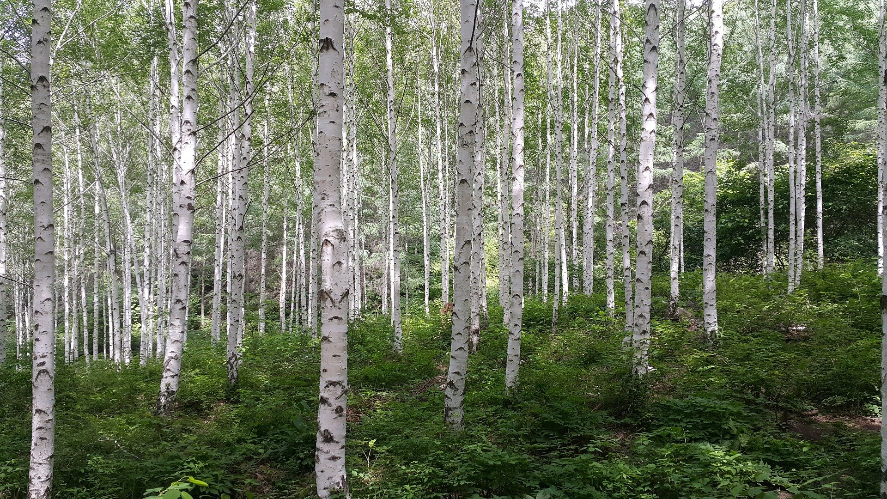

왜 자작나무라고 이름이 지어 졌을까? 그 이유는 자작나무에 기름기가 많아 나무가 탈 때
자작자작 소리가 난다고 하여 자작나무라고 지어졌다.
자작나무숲은 여름철 일 때 입산 가능 시간은 9시~15시 겨울철 일 때는 9시~14시이고 운영시간도 있으니
여유롭게 등산을 하고 싶은 사람들은
좀 더 일찍 가는 것이 좋다. 등산코스로는 1코스부터 7코스까지
있지만, 적설과 결빙시 3코스부터 7코스는 이용이 불가하니 참고하자.
자작나무를 좋아하는 사람이라면 강원도 원대리 자작나무숲을 한 번 가보자.